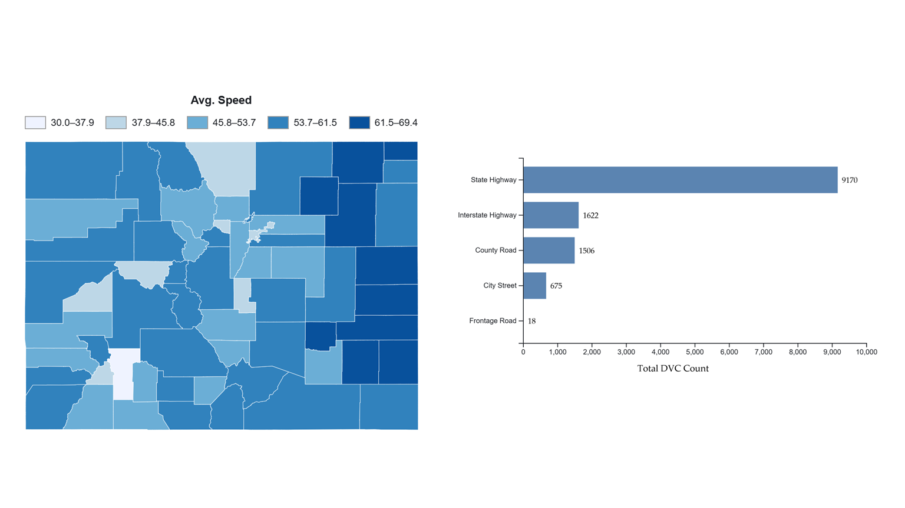

Mapping Assignments

Choropleth Mapping
This choropleth map shows population density across Dane County, with the highest values concentrated in central Madison. Density decreases outward into surrounding suburban and rural areas, creating a clear urban-to-rural gradient. The map highlights how population is strongly concentrated in the urban core and becomes more dispersed toward the county edges.

Point Symbol Mapping
This map shows animal–vehicle collision counts across Iowa counties using proportional symbols. Higher counts are concentrated in eastern and central counties such as Linn, Scott, Johnson, and Polk, where urban areas and major roads increase traffic exposure. Lower counts occur in many western and northwestern counties, suggesting that collision risk is closely related to road density, traffic volume, and the overlap between human activity and wildlife movement.

Isarithmic Mapping
This isarithmic map shows mean annual temperature across Colorado, ranging from about -3°C to 13°C. The coldest values occur in the Rocky Mountains due to higher elevation, while temperatures increase toward the eastern plains. The map reveals a strong west-to-east temperature gradient, with steep changes along the mountain front and more gradual variation across the plains.

Bivariate Mapping
This bivariate choropleth map shows the relationship between obesity and physical inactivity across Erie County. Dark blue and purple tones cluster in central Buffalo, especially near the Lake Erie shoreline, indicating areas where both variables are relatively high. Lighter and mixed colors appear in suburban and rural areas, suggesting more varied health conditions and a less uniform relationship between obesity and physical inactivity.

Small Multiple Visual Analytics
This visual analytics application combines small multiple choropleth mapping and comparative bar chart visualization to examine roadway conditions and deer–vehicle collision patterns across Colorado. The visualization compares spatial variation in average roadway speed alongside collision burden across roadway classifications, supporting exploratory analysis of transportation environments associated with elevated DVC risk.
Colorado Deer–Vehicle Collision Risk
An interactive geovisual analytics project examining deer–vehicle collision risk across Colorado using hotspot analysis, normalized risk mapping, interactive dot mapping, roadway corridor analysis, and coordinated visualization techniques.
Explore ProjectAbout Me
My name is Akinwale Oladimeji, and I am a PhD student in Geography at the University of Iowa. My academic and professional interests focus on geospatial analysis, geovisualization, GIS, and geospatial intelligence (GEOINT). I use tools such as ArcGIS, QGIS, Python, D3.js, and web-based mapping platforms to analyze and communicate spatial data.
My research applies spatial thinking and interactive geovisual analytics to real-world environmental and transportation challenges, including wildlife–vehicle collisions and human–environment interactions. This portfolio showcases mapping and geovisualization projects developed using Observable, GIS, and modern web cartography techniques.